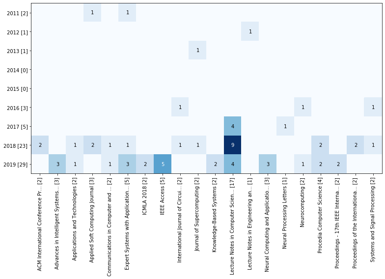
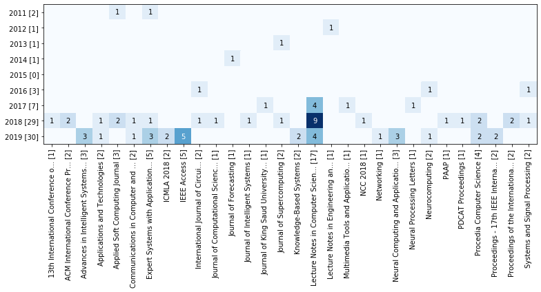
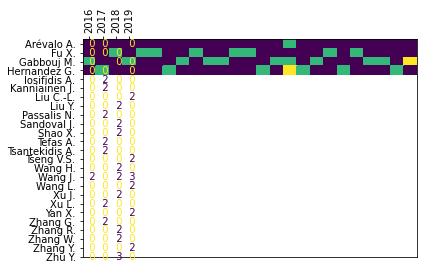
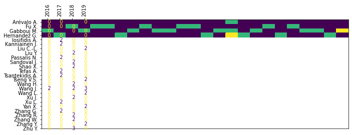
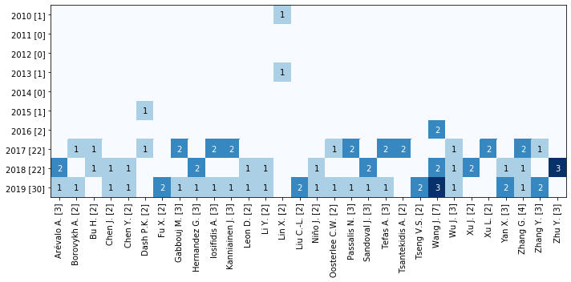
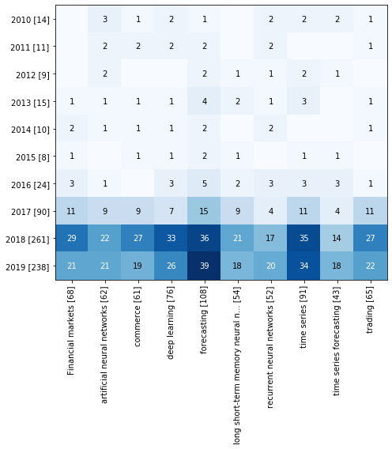
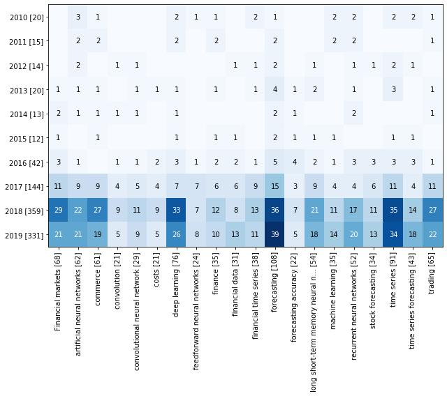
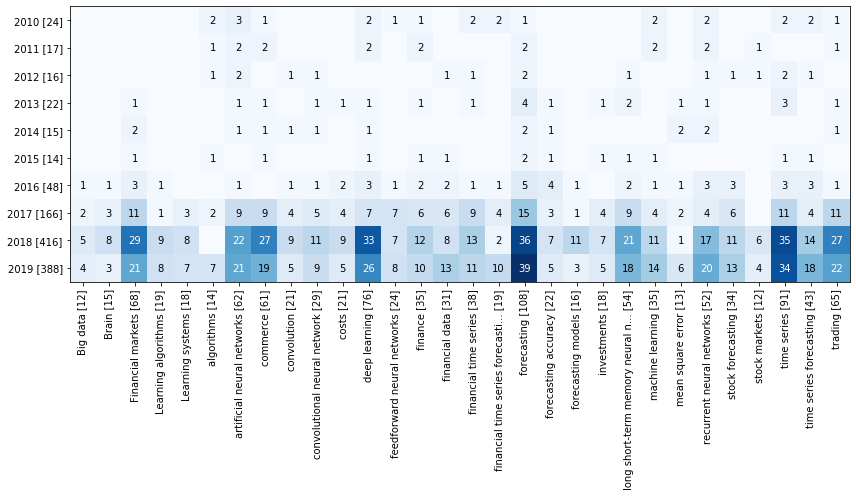

Terms by year¶
[2]:
import matplotlib.pyplot as plt
import pandas as pd
df = pd.read_json("data-05.json", orient="records", lines=True)
[3]:
from techminer import DataFrame, Plot
df = DataFrame(df)
Document type¶
[5]:
df.documents_by_term_per_year(column="Document Type")
[5]:
| Document Type | Year | Num Documents | ID | |
|---|---|---|---|---|
| 0 | Article | 2010 | 1 | [142] |
| 1 | Conference Paper | 2010 | 1 | [143] |
| 2 | Conference Review | 2010 | 1 | [141] |
| 3 | Article | 2011 | 1 | [139] |
| 4 | Conference Paper | 2011 | 1 | [140] |
| 5 | Article | 2012 | 1 | [137] |
| 6 | Conference Paper | 2012 | 1 | [138] |
| 7 | Article | 2013 | 3 | [133, 134, 135] |
| 8 | Book Chapter | 2013 | 1 | [136] |
| 9 | Article | 2014 | 2 | [131, 132] |
| 10 | Article | 2015 | 1 | [130] |
| 11 | Conference Paper | 2015 | 1 | [129] |
| 12 | Article | 2016 | 3 | [125, 127, 128] |
| 13 | Conference Paper | 2016 | 2 | [124, 126] |
| 15 | Conference Paper | 2017 | 12 | [106, 107, 109, 110, 114, 115, 116, 118, 119, ... |
| 14 | Article | 2017 | 7 | [105, 108, 111, 112, 113, 117, 123] |
| 18 | Conference Paper | 2018 | 42 | [53, 55, 56, 57, 59, 60, 61, 63, 64, 65, 66, 6... |
| 16 | Article | 2018 | 8 | [54, 58, 62, 67, 68, 80, 103, 104] |
| 17 | Article in Press | 2018 | 2 | [92, 95] |
| 20 | Conference Paper | 2019 | 28 | [7, 8, 9, 12, 13, 14, 15, 16, 17, 19, 20, 21, ... |
| 19 | Article | 2019 | 25 | [0, 1, 2, 3, 4, 5, 6, 10, 11, 18, 25, 27, 28, ... |
[6]:
df.documents_by_term_per_year(column="Document Type", as_matrix=True)
[6]:
| Article | Article in Press | Book Chapter | Conference Paper | Conference Review | |
|---|---|---|---|---|---|
| 2010 | 1 | 0 | 0 | 1 | 1 |
| 2011 | 1 | 0 | 0 | 1 | 0 |
| 2012 | 1 | 0 | 0 | 1 | 0 |
| 2013 | 3 | 0 | 1 | 0 | 0 |
| 2014 | 2 | 0 | 0 | 0 | 0 |
| 2015 | 1 | 0 | 0 | 1 | 0 |
| 2016 | 3 | 0 | 0 | 2 | 0 |
| 2017 | 7 | 0 | 0 | 12 | 0 |
| 2018 | 8 | 2 | 0 | 42 | 0 |
| 2019 | 25 | 0 | 0 | 28 | 0 |
[7]:
Plot(df.documents_by_term_per_year(column="Document Type")).heatmap()
---------------------------------------------------------------------------
TypeError Traceback (most recent call last)
<ipython-input-7-66222e6a69e9> in <module>
----> 1 Plot(df.documents_by_term_per_year(column="Document Type")).heatmap()
/usr/local/lib/python3.6/dist-packages/techminer/plot.py in heatmap(self, **kwargs)
104 plt.clf()
105 x = self.df.copy()
--> 106 result = plt.gca().pcolor(x.values, **kwargs,)
107 plt.xticks(np.arange(len(x.index)) + 0.5, x.index, rotation="vertical")
108 plt.yticks(np.arange(len(x.columns)) + 0.5, x.columns)
/usr/local/lib/python3.6/dist-packages/matplotlib/__init__.py in inner(ax, data, *args, **kwargs)
1563 def inner(ax, *args, data=None, **kwargs):
1564 if data is None:
-> 1565 return func(ax, *map(sanitize_sequence, args), **kwargs)
1566
1567 bound = new_sig.bind(ax, *args, **kwargs)
/usr/local/lib/python3.6/dist-packages/matplotlib/axes/_axes.py in pcolor(self, alpha, norm, cmap, vmin, vmax, *args, **kwargs)
5897 collection.set_norm(norm)
5898 collection.set_clim(vmin, vmax)
-> 5899 collection.autoscale_None()
5900 self.grid(False)
5901
/usr/local/lib/python3.6/dist-packages/matplotlib/cm.py in autoscale_None(self)
352 if self._A is None:
353 raise TypeError('You must first set_array for mappable')
--> 354 self.norm.autoscale_None(self._A)
355 self.changed()
356
/usr/local/lib/python3.6/dist-packages/matplotlib/colors.py in autoscale_None(self, A)
1052 A = np.asanyarray(A)
1053 if self.vmin is None and A.size:
-> 1054 self.vmin = A.min()
1055 if self.vmax is None and A.size:
1056 self.vmax = A.max()
/usr/local/lib/python3.6/dist-packages/numpy/core/_methods.py in _amin(a, axis, out, keepdims, initial, where)
32 def _amin(a, axis=None, out=None, keepdims=False,
33 initial=_NoValue, where=True):
---> 34 return umr_minimum(a, axis, None, out, keepdims, initial, where)
35
36 def _sum(a, axis=None, dtype=None, out=None, keepdims=False,
TypeError: '<=' not supported between instances of 'str' and 'int'

Source title¶
[10]:
df.documents_by_term_per_year(column="Source title").head(20)
[10]:
| Source title | Year | Num Documents | ID | |
|---|---|---|---|---|
| 0 | European Journal of Finance | 2010 | 1 | [142] |
| 1 | Proceedings - 2010 6th International Conferenc... | 2010 | 1 | [143] |
| 2 | Proceedings of the 18th European Symposium on ... | 2010 | 1 | [141] |
| 3 | Applied Soft Computing Journal | 2011 | 1 | [140] |
| 4 | Expert Systems with Applications | 2011 | 1 | [139] |
| 5 | International Journal of Innovative Computing,... | 2012 | 1 | [137] |
| 6 | Lecture Notes in Engineering and Computer Science | 2012 | 1 | [138] |
| 7 | Advanced Information and Knowledge Processing | 2013 | 1 | [136] |
| 8 | Engineering Applications of Artificial Intelli... | 2013 | 1 | [134] |
| 9 | Journal of Supercomputing | 2013 | 1 | [135] |
| 10 | Review of Financial Economics | 2013 | 1 | [133] |
| 11 | Applied Artificial Intelligence | 2014 | 1 | [131] |
| 12 | Journal of Forecasting | 2014 | 1 | [132] |
| 13 | International Journal of Computational Intelli... | 2015 | 1 | [130] |
| 14 | WebMedia 2015 - Proceedings of the 21st Brazil... | 2015 | 1 | [129] |
| 15 | 2016 IEEE/ACIS 15th International Conference o... | 2016 | 1 | [124] |
| 16 | Computational Intelligence and Neuroscience | 2016 | 1 | [128] |
| 17 | International Journal of Circuits, Systems and... | 2016 | 1 | [127] |
| 18 | Neurocomputing | 2016 | 1 | [125] |
| 19 | Proceedings - 17th International Symposium on ... | 2016 | 1 | [126] |
[11]:
df.documents_by_term_per_year(column="Source title", minmax=(2, 4))
[11]:
| Source title | Year | Num Documents | ID | |
|---|---|---|---|---|
| 29 | Lecture Notes in Computer Science (including s... | 2017 | 4 | [119, 120, 121, 122] |
| 45 | ACM International Conference Proceeding Series | 2018 | 2 | [69, 75] |
| 48 | Applied Soft Computing Journal | 2018 | 2 | [67, 80] |
| 61 | Procedia Computer Science | 2018 | 2 | [90, 91] |
| 73 | Proceedings of the International Joint Confere... | 2018 | 2 | [63, 64] |
| 99 | Lecture Notes in Computer Science (including s... | 2019 | 4 | [36, 42, 45, 49] |
| 81 | Advances in Intelligent Systems and Computing | 2019 | 3 | [41, 51, 52] |
| 86 | Expert Systems with Applications | 2019 | 3 | [0, 1, 11] |
| 100 | Neural Computing and Applications | 2019 | 3 | [27, 37, 44] |
| 98 | Knowledge-Based Systems | 2019 | 2 | [4, 25] |
| 102 | Procedia Computer Science | 2019 | 2 | [40, 48] |
| 103 | Proceedings - 17th IEEE International Conferen... | 2019 | 2 | [23, 24] |
[12]:
Plot(df.documents_by_term_per_year(column="Source title", minmax=(2, 4))).heatmap()
---------------------------------------------------------------------------
TypeError Traceback (most recent call last)
<ipython-input-12-e0fe04f6a687> in <module>
----> 1 Plot(df.documents_by_term_per_year(column="Source title", minmax=(2, 4))).heatmap()
/usr/local/lib/python3.6/dist-packages/techminer/plot.py in heatmap(self, **kwargs)
104 plt.clf()
105 x = self.df.copy()
--> 106 result = plt.gca().pcolor(x.values, **kwargs,)
107 plt.xticks(np.arange(len(x.index)) + 0.5, x.index, rotation="vertical")
108 plt.yticks(np.arange(len(x.columns)) + 0.5, x.columns)
/usr/local/lib/python3.6/dist-packages/matplotlib/__init__.py in inner(ax, data, *args, **kwargs)
1563 def inner(ax, *args, data=None, **kwargs):
1564 if data is None:
-> 1565 return func(ax, *map(sanitize_sequence, args), **kwargs)
1566
1567 bound = new_sig.bind(ax, *args, **kwargs)
/usr/local/lib/python3.6/dist-packages/matplotlib/axes/_axes.py in pcolor(self, alpha, norm, cmap, vmin, vmax, *args, **kwargs)
5897 collection.set_norm(norm)
5898 collection.set_clim(vmin, vmax)
-> 5899 collection.autoscale_None()
5900 self.grid(False)
5901
/usr/local/lib/python3.6/dist-packages/matplotlib/cm.py in autoscale_None(self)
352 if self._A is None:
353 raise TypeError('You must first set_array for mappable')
--> 354 self.norm.autoscale_None(self._A)
355 self.changed()
356
/usr/local/lib/python3.6/dist-packages/matplotlib/colors.py in autoscale_None(self, A)
1052 A = np.asanyarray(A)
1053 if self.vmin is None and A.size:
-> 1054 self.vmin = A.min()
1055 if self.vmax is None and A.size:
1056 self.vmax = A.max()
/usr/local/lib/python3.6/dist-packages/numpy/core/_methods.py in _amin(a, axis, out, keepdims, initial, where)
32 def _amin(a, axis=None, out=None, keepdims=False,
33 initial=_NoValue, where=True):
---> 34 return umr_minimum(a, axis, None, out, keepdims, initial, where)
35
36 def _sum(a, axis=None, dtype=None, out=None, keepdims=False,
TypeError: '<=' not supported between instances of 'str' and 'int'

[8]:
rdf.terms_by_year(column="Source title", sep=",", top_n=20).heatmap(figsize=(11, 8))

[9]:
rdf.terms_by_year(column="Source title", sep=",", top_n=30).heatmap(figsize=(11, 6))

Authors¶
[13]:
df.documents_by_term_per_year(column="Authors", sep=",").head(20)
[13]:
| Authors | Year | Num Documents | ID | |
|---|---|---|---|---|
| 0 | Dunis C.L. | 2010 | 1 | [142] |
| 1 | Laws J. | 2010 | 1 | [142] |
| 2 | Lin X. | 2010 | 1 | [143] |
| 3 | Sermpinis G. | 2010 | 1 | [142] |
| 4 | Song Y. | 2010 | 1 | [143] |
| 5 | Yang Z. | 2010 | 1 | [143] |
| 6 | Zhai F. | 2010 | 1 | [143] |
| 7 | [No author name available] | 2010 | 1 | [141] |
| 8 | Ghazali R. | 2011 | 1 | [139] |
| 9 | Hsiao H.-F. | 2011 | 1 | [140] |
| 10 | Hsieh T.-J. | 2011 | 1 | [140] |
| 11 | Hussain A.J. | 2011 | 1 | [139] |
| 12 | Liatsis P. | 2011 | 1 | [139] |
| 13 | Yeh W.-C. | 2011 | 1 | [140] |
| 14 | Cheng C.-H. | 2012 | 1 | [137] |
| 15 | Ortega L.F. | 2012 | 1 | [138] |
| 16 | Wei L.-Y. | 2012 | 1 | [137] |
| 17 | Bekiros S.D. | 2013 | 1 | [133] |
| 18 | Cai X. | 2013 | 1 | [135] |
| 19 | Grothmann R. | 2013 | 1 | [136] |
[14]:
df.documents_by_term_per_year(column="Authors", sep=",", as_matrix=True)
[14]:
| Aadil F. | Adam M.T.P. | Afolabi D. | Afzal S. | Ahmed S. | Akita R. | Aktas M.S. | Al-Askar H. | Al-Jumeily D. | Ali Mahmud S. | ... | Zhu H. | Zhu J. | Zhu Y. | Zimmermann H.G. | Zohren S. | Zou Q. | [No author name available] | von Mettenheim H.-J. | Ładyżyński P. | Żbikowski K. | |
|---|---|---|---|---|---|---|---|---|---|---|---|---|---|---|---|---|---|---|---|---|---|
| 2010 | 0 | 0 | 0 | 0 | 0 | 0 | 0 | 0 | 0 | 0 | ... | 0 | 0 | 0 | 0 | 0 | 0 | 1 | 0 | 0 | 0 |
| 2011 | 0 | 0 | 0 | 0 | 0 | 0 | 0 | 0 | 0 | 0 | ... | 0 | 0 | 0 | 0 | 0 | 0 | 0 | 0 | 0 | 0 |
| 2012 | 0 | 0 | 0 | 0 | 0 | 0 | 0 | 0 | 0 | 0 | ... | 0 | 0 | 0 | 0 | 0 | 0 | 0 | 0 | 0 | 0 |
| 2013 | 0 | 0 | 0 | 0 | 0 | 0 | 0 | 0 | 0 | 0 | ... | 0 | 0 | 0 | 1 | 0 | 0 | 0 | 1 | 0 | 0 |
| 2014 | 0 | 0 | 0 | 0 | 0 | 0 | 0 | 0 | 0 | 1 | ... | 0 | 0 | 0 | 0 | 0 | 0 | 0 | 0 | 0 | 0 |
| 2015 | 0 | 0 | 0 | 0 | 0 | 0 | 0 | 0 | 0 | 0 | ... | 0 | 0 | 0 | 0 | 0 | 0 | 0 | 0 | 0 | 0 |
| 2016 | 0 | 0 | 0 | 0 | 0 | 1 | 0 | 1 | 1 | 0 | ... | 0 | 0 | 0 | 0 | 0 | 0 | 0 | 0 | 0 | 0 |
| 2017 | 0 | 0 | 1 | 0 | 0 | 0 | 0 | 0 | 0 | 0 | ... | 0 | 0 | 0 | 0 | 0 | 0 | 0 | 0 | 0 | 0 |
| 2018 | 0 | 1 | 0 | 0 | 0 | 0 | 0 | 0 | 0 | 0 | ... | 1 | 1 | 3 | 0 | 0 | 0 | 0 | 0 | 0 | 0 |
| 2019 | 1 | 0 | 0 | 1 | 1 | 0 | 1 | 0 | 0 | 0 | ... | 0 | 0 | 0 | 0 | 1 | 1 | 0 | 0 | 1 | 1 |
10 rows × 407 columns
[16]:
Plot(df.documents_by_term_per_year(column="Authors", sep=",", as_matrix=True, minmax=(2, 6))).heatmap()
[16]:
<matplotlib.axes._subplots.AxesSubplot at 0x7fd8aac82898>

[19]:
plt.figure(figsize=(11, 4))
Plot(df.documents_by_term_per_year(column="Authors", sep=",", as_matrix=True, minmax=(2,3))).heatmap()
[19]:
<matplotlib.axes._subplots.AxesSubplot at 0x7fd8aa9cea58>

[14]:
df.terms_by_year(column="Authors", sep=",", top_n=30).heatmap(figsize=(10, 5))

Keywords¶
[29]:
df.documents_by_term_per_year(column="keywords_cleaned", sep=";").head(20)
[29]:
| keywords_cleaned | Year | Num Documents | ID | |
|---|---|---|---|---|
| 12 | artificial neural networks | 2010 | 3 | [141, 142, 143] |
| 1 | Artificial Neural Network | 2010 | 2 | [141, 143] |
| 10 | algorithms | 2010 | 2 | [142, 143] |
| 13 | autoencoder | 2010 | 2 | [142, 143] |
| 15 | cluster | 2010 | 2 | [142, 143] |
| 17 | deep learning | 2010 | 2 | [141, 143] |
| 24 | financial time series | 2010 | 2 | [142, 143] |
| 25 | financial time series forecasting | 2010 | 2 | [142, 143] |
| 31 | machine learning | 2010 | 2 | [141, 143] |
| 34 | prediction | 2010 | 2 | [142, 143] |
| 36 | recurrent neural networks | 2010 | 2 | [141, 143] |
| 42 | time series | 2010 | 2 | [142, 143] |
| 43 | time series forecasting | 2010 | 2 | [142, 143] |
| 0 | ARTICLE | 2010 | 1 | [143] |
| 2 | Classifiers | 2010 | 1 | [141] |
| 3 | ELM | 2010 | 1 | [143] |
| 4 | GPU | 2010 | 1 | [143] |
| 5 | Human | 2010 | 1 | [141] |
| 6 | Market | 2010 | 1 | [141] |
| 7 | Prediction | 2010 | 1 | [141] |
[26]:
df.documents_by_term_per_year(column="keywords_cleaned", sep=";", as_matrix=True, minmax=(10,20))
[26]:
| Financial markets | commerce | convolutional neural network | finance | financial data | financial time series | financial time series forecasting | forecasting | forecasting models | long short-term memory neural network | machine learning | recurrent neural networks | stock forecasting | time series | time series forecasting | trading | |
|---|---|---|---|---|---|---|---|---|---|---|---|---|---|---|---|---|
| 2017 | 11 | 0 | 0 | 0 | 0 | 0 | 0 | 15 | 0 | 0 | 0 | 0 | 0 | 11 | 0 | 11 |
| 2018 | 0 | 0 | 11 | 12 | 0 | 13 | 0 | 0 | 11 | 0 | 11 | 17 | 11 | 0 | 14 | 0 |
| 2019 | 0 | 19 | 0 | 10 | 13 | 11 | 10 | 0 | 0 | 18 | 14 | 20 | 13 | 0 | 18 | 0 |
[17]:
rdf.terms_by_year(column="keywords (cleaned)", sep=";", top_n=10).heatmap(
figsize=(7, 8)
)

[18]:
rdf.documents_by_term_per_year(column="keywords (cleaned)", sep=";", top_n=20).heatmap(
figsize=(9, 8)
)

[19]:
rdf.terms_by_year(column="keywords (cleaned)", sep=";", top_n=30).heatmap(
figsize=(12, 7)
)
